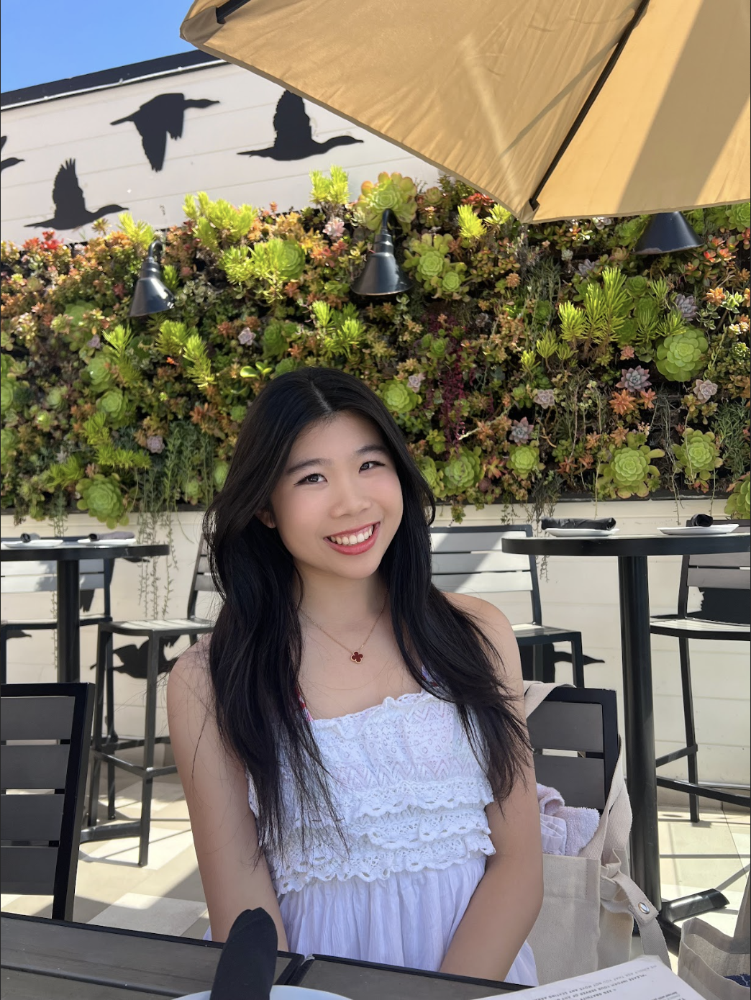

Hi, my name is Anna Lin
I am a freshman majoring in Information Systems at Carnegie Mellon University. I enjoy exploring the intersections of technology, healthcare, and the arts.
In high school, I was deeply invovled in STEM outreach, hosting coding workshops for underserved communities to help girls explore their passions in
technology. At the same time, I fostered artistic expression by choreographing dance pieces open to all student, creating a space for creative exploration.
I also developed a storng interest in research and problem-solbing, which led me to pursue interdisciplinary projects.
During the summer before college, I interned at Boeing, working on
industrial engineering and additive manufacturing projects. I co-led an Integrated Project Team, hosted weekly conferences for 65 interns, and facilitated discussions with guest speakers to help students navigate careers in STEM. Now, in college, I continue applying my technical and analytical skills to research, including AI bias studies and exploratory data analysis, as I work toward a future in medicine.